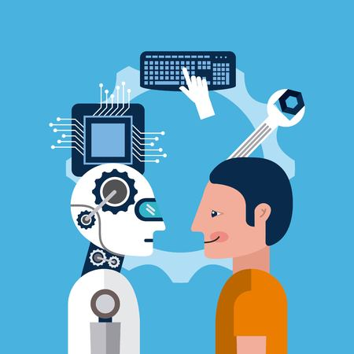
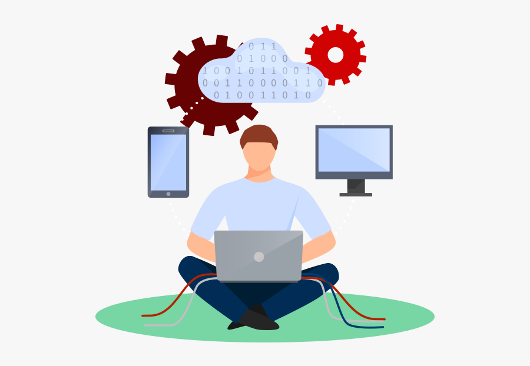
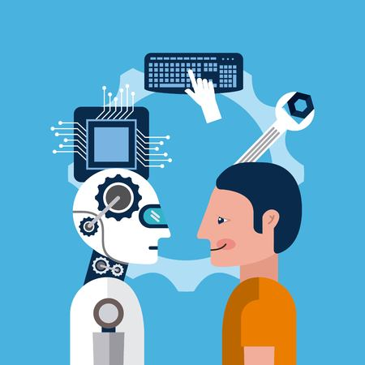
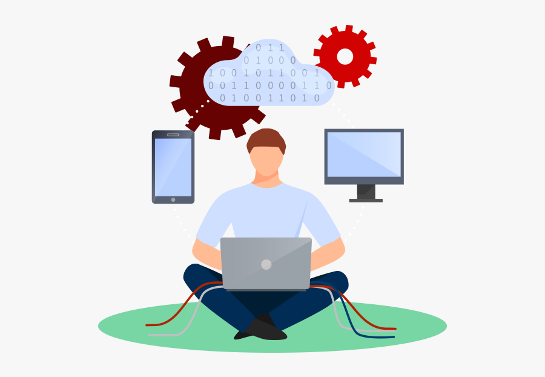
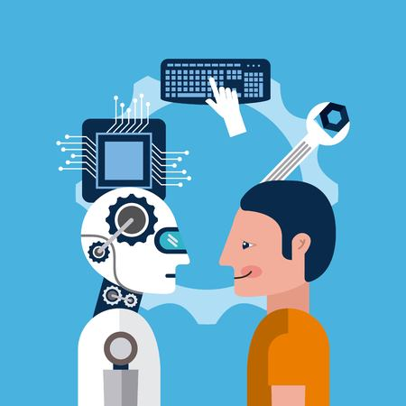
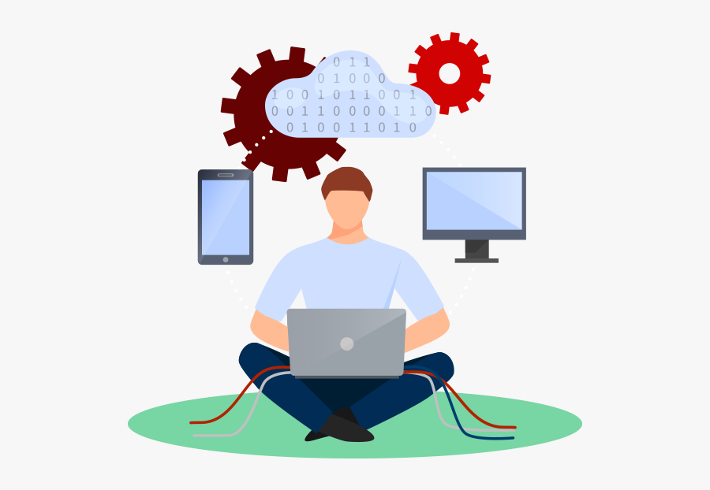
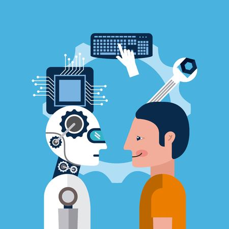
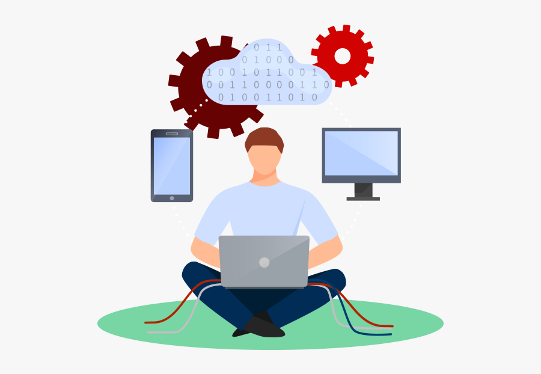

I decided to go out of state for college so I could experience a new environment outside of my home bubble and grow into the person I want to be in the future. I am passionate about finding the connections between information, people, and technology. With my educational background, I will strive to make technology access equitable and transparent for all groups of people.
Case Studies
The problem space: Our team's goal was to take a vague, unfinished concept and transform it into concise plans, creating a final digital prototype as our end goal. Our mission was create a product that provides fun, feasible recipes for food-insecure individuals while being conscious of their limited access to ingredients. With this purpose in mind, we created "Quico."
Beginning stages: The original problem space we wanted to tackle was the concept of e-learning
and how we can improve the experience of online learning for both instructors and students. However, we quickly ran
into difficulties of what kind of functions we wanted our prototype to have, especially since there are
many existing competitors on the market such as Canvas, Zoom, Microsoft Teams, etc. In short,
the scope of our project was too wide.
Solution: We sought guidance from our professor
to help narrow our scope and leverage the ideas we already had to stay on track of our
project timeline. Getting help from a more experienced advisor helped us fine-tune our idea
of e-learning and transform it to help users learn how to cook and provide recipes for people in need.
Throughout the process: Being on a team of 4 and having set weekly deadlines, we found it difficult to
divide the work equally and make sure everyone was contributing with their voices constantly being heard.
In order to avoid overshadowing and allow each team member to collaborate with their thoughts/opinions,
we held brainstorming sessions in the beginning of each week to incorporate all of our ideas to find the
most efficient solutions. During our meetings, we followed a project management plan in which we
dedicated specific tasks to each member and also provided a space for compliments, constructive
criticism, and feedback for any necessary improvements and changes.
Our final prototype benefits our users by giving them the ability to filter and find recipes based on a variety of constraints like the number/type of ingredients, specific tools, prep time, and the total price. The most unique feature our app has to offer is inspired by the University of Michigan's Maize & Blue Cupboard “Cook with a Chef", where users are able to attend online cooking sessions with a real chef! We implemented an “Events” feature where users can get deeper, interactive instructions through live cooking that goes beyond just written steps and video guides.

The scope: This project takes data from 3 different APIs (Youtube, Itunes, Napster Music) and creates a database using SQLite in Python. Using the database created, we performed desired calculations and created visuals to represent the data using matplotlib. The overall goal of this project was to use Napster, iTunes, and Youtube APIs to produce analytic insights of popular music by genre. We do this through a variety of variables such as subscribers, view count, song length, and song price as well as the overall popularity of artists.
Final Project Report including our defined goals, github project link, instructions on how to run it, problems encountered, code screenshots, visual representations, etc.
This project takes data from 3 different APIs (Youtube, Itunes, Napster Music) and creates a database using SQLite in Python. Using the database created, we performed desired calculations and created visuals to represent the data using matplotlib. The overall goal of this project was to access the popularity of the top artists of 23 music genres.